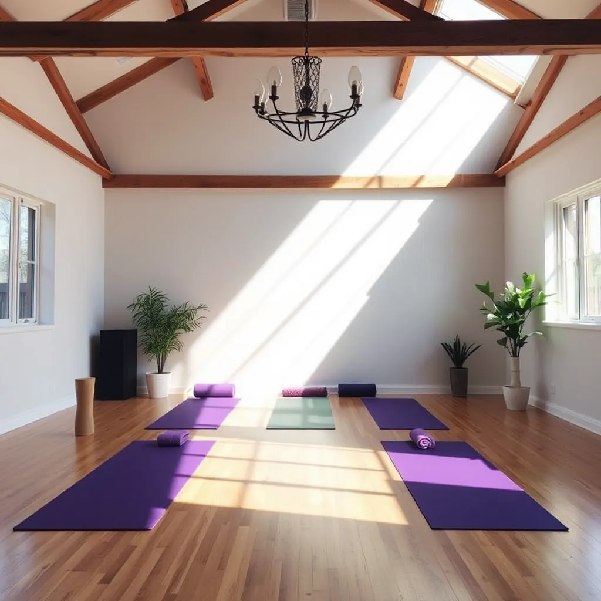

Ontdek onze missie, visie en passie voor welzijn en balans.
Welkom bij InnerZen, het centrum waar mindfulness, fysieke gezondheid en innerlijke rust samenkomen. Bij ons draait alles om het creëren van een veilige en inspirerende omgeving waarin je kunt vertragen, ontspannen en jezelf opnieuw kunt ontdekken. Onze missie is om iedereen – van complete beginners tot ervaren yogi's en meditatieliefhebbers – te begeleiden op hun unieke pad naar balans en welzijn.
In een wereld vol haast, drukte en constante prikkels, bieden wij een plek waar je de stilte weer kunt horen en de rust kunt voelen. Onze lessen combineren eeuwenoude tradities van yoga en meditatie met moderne inzichten over beweging, ademhaling en mentale gezondheid. Het resultaat is een authentieke ervaring die niet alleen je lichaam sterker en soepeler maakt, maar ook je geest helder en gefocust houdt.
Ons team van toegewijde docenten neemt de tijd om je persoonlijk te begeleiden, je behoeften te begrijpen en je oefeningen aan te passen aan jouw niveau. Hierbij staan respect, vriendelijkheid en persoonlijke groei centraal. Of je nu op zoek bent naar meer flexibiliteit, een sterker lichaam, minder stress of gewoon een moment voor jezelf – bij InnerZen vind je wat je zoekt.
Wij geloven dat welzijn begint met aandacht voor lichaam én geest. Daarom nodigen wij je uit om mee te doen, te ontdekken hoeveel kracht er schuilt in zachte bewegingen, bewuste ademhaling en het vinden van rust in het moment. Welkom thuis bij InnerZen – jouw plek voor ontspanning, inspiratie en verbinding.
Onze studio is warm en uitnodigend, voorzien van natuurlijke verlichting, zachte matten en kalmerende geuren. Hier vind je rust in de drukte van het moderne leven.